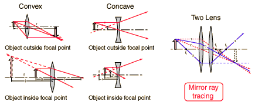

Ray Diagrams for Lenses
The image formed by a single lens can be located and sized with three principal rays. Examples are given for converging and diverging lenses and for the cases where the object is inside and outside the principal focal length.

The "three principal rays" which are used for visualizing the image location and size are:
- A ray from the top of the object proceeding parallel to the centerline perpendicular to the lens. Beyond the lens, it will pass through the principal focal point. For a negative lens, it will proceed from the lens as if it emanated from the focal point on the near side of the lens.
- A ray through the center of the lens, which will be undeflected. (Actually, it will be jogged downward on the near side of the lens and back up on the exit side of the lens, but the resulting slight offset is neglected for thin lenses.)
- A ray through the principal focal point on the near side of the lens. It will proceed parallel to the centerline upon exit from the lens. The third ray is not really needed, since the first two locate the image.
|
Index
Lens concepts |